Enumerating birds in a video
Justin Pearson
2014-10-25
Abstract
We explore computational techniques for enumerating birds in a video file. The video was filmed in November 2011 in Simi Valley, California, and features thousands of crows on their daily evening commute from the city to a large green open space. We determine that the 8-minute video captures roughly 1200 crows.


Since the crows are exiting the frame through the top and left sides, the main idea is to count the crows by counting when they leave the top or left side of the frame.
Footage
Here’s our footage:
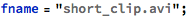
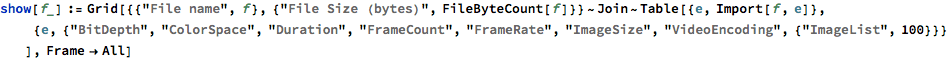
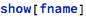
| File name | short_clip.avi |
| File Size (bytes) | 12939120 |
| BitDepth | 8 |
| ColorSpace | RGB |
| Duration | 3.46667 |
| FrameCount | 104 |
| FrameRate | 30. |
| ImageSize | {720,480} |
| VideoEncoding | DV/DVCPRO - NTSC |
| {ImageList,100} |  |
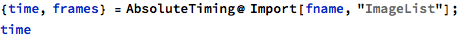


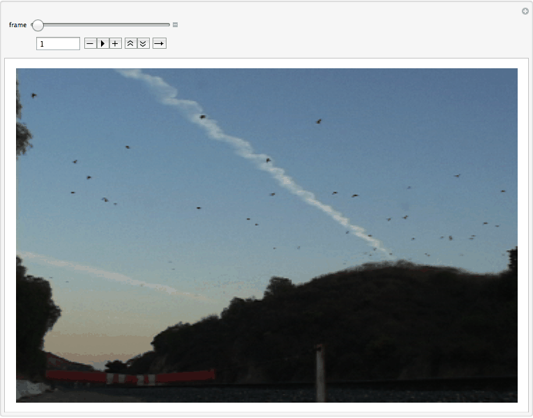
Idea 1: View video as 3D Image
If we mask out the crows and stack the frames up to form a 3D image, each crow will trace out a long tube-like shape. Counting the tubes tells us the number of crows in the whole video.


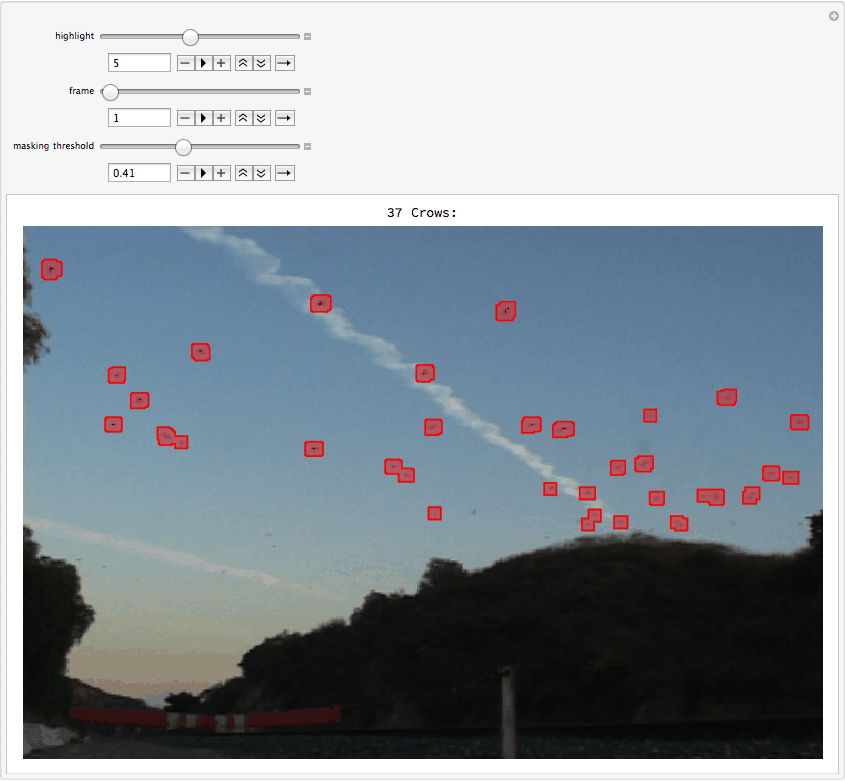
Here’s a good threshold value:
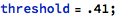
Make & Export 3D image
This takes a long time, so I locked these cells.
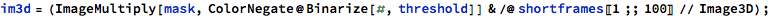

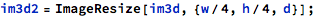
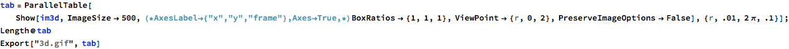
Show 3D image
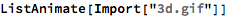

Idea 2: Count when crows leave the frame
Import the frames as raw pixel values instead of Image[] objects.
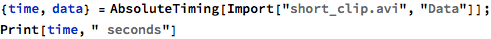


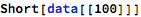
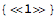


The fact that the lefthand side has some dark trees will make things difficult; let’s just crop them out.
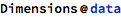


Take vertical column of pixels from each frame
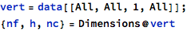
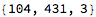


Take horizontal slice of pixels from each frame

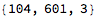
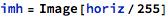

Quick check: Show a video of crows leaving the frame
You can see the crows getting “stuck” when they hit the upper and left edges.
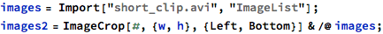
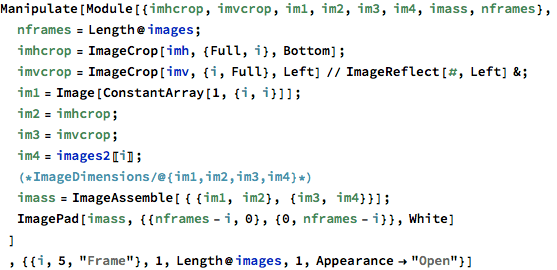
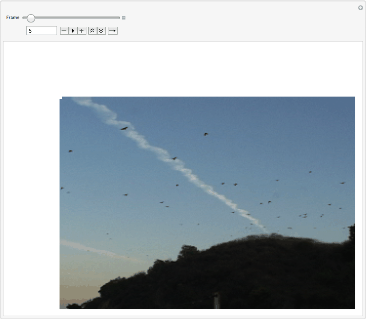
Looks like ~15 leave the RHS and 6 leave the top.
The idea will be to have MMA count the number of crows that leave the left & top sides.
Crows exiting top of frame
Here’s the top few rows of a 15-minute video of crows. The whole file was too big to import.
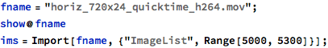
| File name | horiz_720x24_quicktime_h264.mov |
| File Size (bytes) | 29436035 |
| BitDepth | 8 |
| ColorSpace | RGB |
| Duration | 479.479 |
| FrameCount | 14370 |
| FrameRate | 29.97 |
| ImageSize | {720,24} |
| VideoEncoding | H.264 |
| {ImageList,100} |
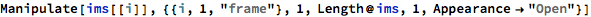

Import video in chunks of 300 frames; extract the top row of pixels from each frame; parallelize this for speed.


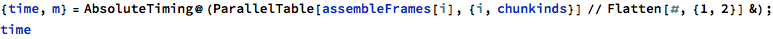
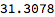


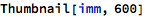


Detection via GradientFilter

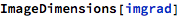


It’s hard to see in this pic, but if you zoom in, black is background and white is crows.

Find a good threshold pixel value to differentiate between “crow” and “background”.

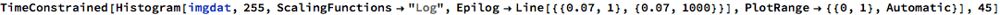
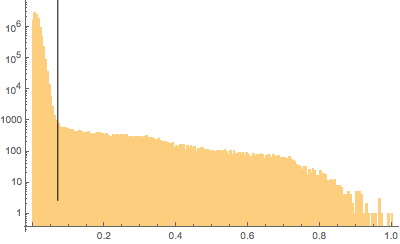
So it looks like a good dividing line between black background and white crows is around 0.07.


Looks pretty good. Let’s highlight them:
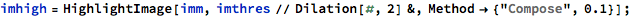
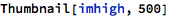
Here’s a zoom-in of the left side of the image:
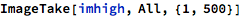

Hard to see, but the crows are highlighted slightly.

So, how many crows left the top of the frame during this 8-minute video?
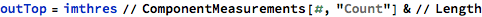

Crows exiting left side of frame
Do essentially the same thing, but for the video that’s the left side of the frame.
A long file. Import in pieces.
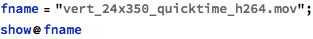
| File name | vert_24x350_quicktime_h264.mov |
| File Size (bytes) | 18630731 |
| BitDepth | 8 |
| ColorSpace | RGB |
| Duration | 479.479 |
| FrameCount | 14370 |
| FrameRate | 29.97 |
| ImageSize | {24,350} |
| VideoEncoding | H.264 |
| {ImageList,100} |
Preview
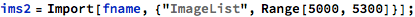


Aside: Consider just assembling these skinny frames instead of only their leftmost cols.
The easiest thing to do would be to just squish all the frames together.
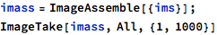

Too dotty.
Import in pieces.


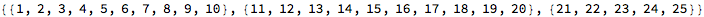


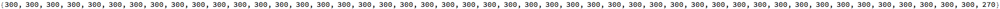


A very long image:
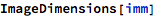


Left side of the image:
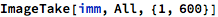
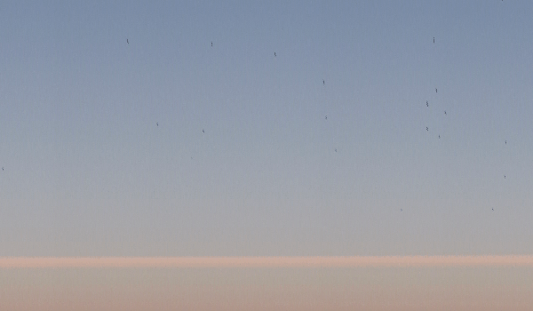

Detection via GradientFilter


Black is background and white is crows.
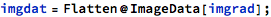


So it looks like a good dividing line between black background and white crows is around 0.07.


Looks pretty good. Let’s highlight them:

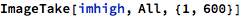


So, how many crows departed out the left side of the frame during the 8-minute video?


Conclusion
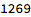
About 1400 crows flew through the video over the course of 8 minutes: about 3 crows a second. Wow!